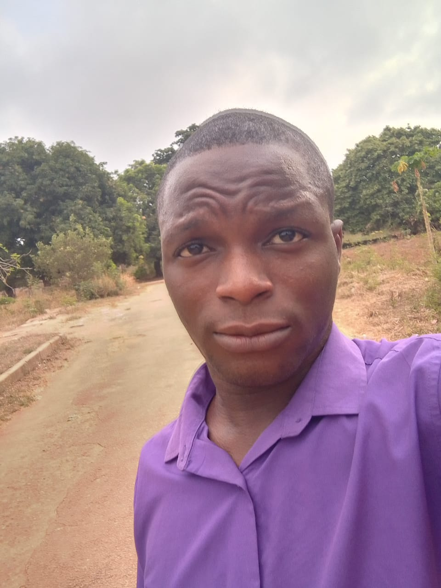

ND2 Computer Science student passionate about video editing, content creation and digital creativity.
Explore More
My name is Olasemeji Ibrahim Olamilekan , an ND2 student of Computer
Science at The Polytechnic Ibadan. I have a growing passion for
technology, digital creativity and modern media. My interests
include video editing, content creation and web development,
where I enjoy combining creativity with technology to create
engaging digital experiences.
Over time, I have continued developing my skills through
academic learning, personal projects and continuous exploration
of modern digital tools and trends.
I attended Islamic heritage glorious School , Asonmojamo street, moniya Ibadan, where I completed
my primary education and built my early academic foundation.
During this period, I developed discipline, consistency and
interest in learning core subjects.
Towards the completion of my primary education, I prepared for
and wrote the Common Entrance Examination which marked my
transition into secondary school education.
I continued my educational journey at Community high school, Isopako, Farayola street, Bodija, Ibadan.
My secondary experience introduced me to a more advanced
academic structure and wider subject exposure including ICT-
related studies. It helped improve my academic discipline, responsibility
and long-term educational focus while increasing my interest in
technology and digital learning
As an ND2 Computer Science student at The Polytechnic Ibadan, I have gained exposure to practical and theoretical aspects of technology including web development, computer systems and digital learning.
Through assignments, projects and practical sessions, I have continued improving my technical knowledge, creativity and problem-solving ability.
My growing interest in video editing and content creation has motivated me to continuously explore modern digital tools and creative storytelling techniques.